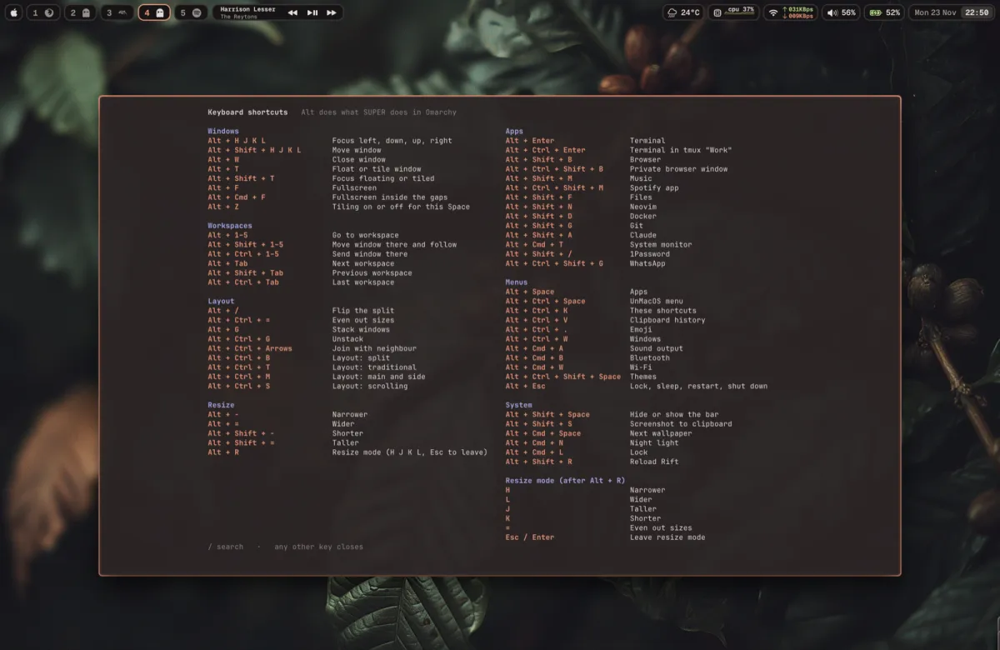

Cheatsheet
Alt is the UnMacOS key. Ten shortcuts cover most of your day. The rest are here when you need them. On your Mac, Alt + Ctrl + K shows this list, built from your own config.
| Keys | Does |
|---|---|
| Alt + Space | Launch an app |
| Alt + Enter | New terminal |
| Alt + H J K L | Focus the window to the left, below, above, right |
| Alt + Shift + H J K L | Move the window that way |
| Alt + 1–5 | Go to a workspace |
| Alt + Shift + 1–5 | Take the window to a workspace |
| Alt + W | Close the window |
| Alt + F | Fullscreen |
| Alt + Ctrl + Space | The UnMacOS menu: everything else |
| Alt + Ctrl + K | Every shortcut on one screen |
| Keys | Opens |
|---|---|
| Alt + Enter | Terminal (Ghostty) |
| Alt + Ctrl + Enter | Terminal in the tmux session "Work" |
| Alt + Shift + B | Browser (Firefox). Add Ctrl for a private window |
| Alt + Shift + M | Music (spotify_player) |
| Alt + Shift + F | Files (nnn) |
| Alt + Shift + N | Neovim |
| Alt + Ctrl + Shift + M | Spotify app (live theme switching) |
| Alt + Shift + G | lazygit |
| Alt + Shift + D | lazydocker |
| Alt + Shift + A | Claude |
| Alt + Cmd + T | btop |
| Alt + Shift + / | 1Password |
| Keys | Menu |
|---|---|
| Alt + Space | Apps |
| Alt + Ctrl + Space | Everything UnMacOS can do |
| Alt + Ctrl + K | Every shortcut on one screen |
| Alt + Ctrl + V | Clipboard history |
| Alt + Ctrl + . | Emoji |
| Alt + Ctrl + W | Jump to any window |
| Alt + Cmd + A | Sound output |
| Alt + Cmd + B | Bluetooth |
| Alt + Cmd + W | Wi-Fi |
| Alt + Ctrl + Shift + Space | Themes |
| Alt + Esc | Lock, sleep, restart, shut down |
| Keys | Does |
|---|---|
| Alt + H J K L | Focus left, down, up, right |
| Alt + Shift + H J K L | Move the window |
| Alt + 1–5 | Go to a workspace |
| Alt + Shift + 1–5 | Take the window there (Ctrl instead of Shift sends it and stays) |
| Alt + Tab | Next workspace |
| Alt + Shift + Tab | Previous workspace |
| Alt + Ctrl + Tab | Last workspace |
| Alt + W | Close |
| Alt + T | Float or tile |
| Alt + Shift + T | Switch focus between floating and tiled |
| Alt + F | Fullscreen |
| Alt + Cmd + F | Fullscreen inside the gaps |
| Alt + G / Alt + Ctrl + G | Stack / unstack |
| Alt + Ctrl + Arrows | Join with the neighbour |
| Alt + / | Flip the split |
| Alt + − / Alt + = | Narrower / wider (Shift for height, Alt + R for resize mode) |
| Alt + Ctrl + = | Even out sizes |
| Alt + Ctrl + B / T / M / S | Layout: split, traditional, main-and-side, scrolling |
| Alt + Z | Tiling on or off for this Space |
| Keys | Does |
|---|---|
| Alt + Shift + Space | Hide or show the bar |
| Alt + Cmd + Space | Next wallpaper for the theme |
| Alt + Shift + S | Screenshot to the clipboard |
| Alt + Cmd + N | Night light |
| Alt + Cmd + L | Lock |
| Alt + Shift + R | Reload Rift |
| Omarchy (Linux) | UnMacOS |
|---|---|
| SUPER | Alt |
| ALT | Ctrl |
| CTRL | Cmd |
